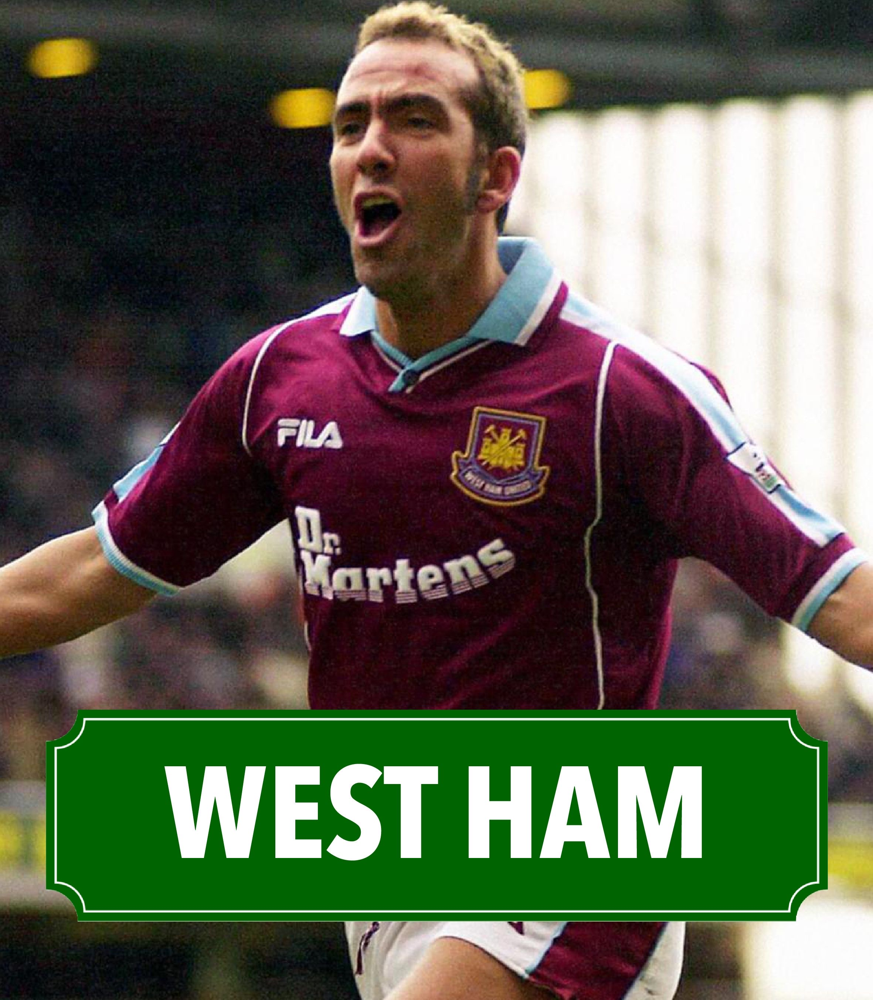
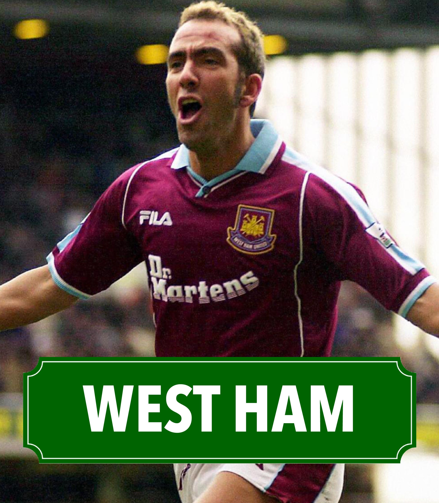

Joels Football Trips
Mijn naam is Jaron Joel van Ommen en ik houdt nogal van voetbal. Ik heb een voetbalshirt verzameling ter waarde van ongeveer 4000 euro. Maar de shirts zijn niet het enige waar ik mijn geld graag aan uit geef ik houd namelijk ook enorm van reizen. Ik neem jullie hier mee op mijn reizen naar het buitenland en binnenland en ik vertel over mijn ervaringen met deze clubs. We zullen veel landen bezoeken en veel verschillende soorten clubs ontdenken. Van gigantische clubs in de Champions League naar clubs die strijden tegen degredatie. Van iconische stadions tot hele nieuwe stadions die er niet heel lang staan. Druk maar snel op een club waarvan je mijn ervaring wilt meemaken om te beginnen.

 

De Manier Van Teams Bezoeken
Als men dit zelf wilt meemaken maar je weet niet zo goed waar je heen zou willen, raad ik aan om een random wheel generator erbij te pakken. Hier vul je dan de teams in waar je tussen twijfelt en dan draai je het rad rond. Waar het rad dan op valt is dan het team waar je heen gaat. Dan voor de vliegtickets/treintickets als je zelf geen auto hebt. Voor de treintickets zou ik gewoon simpel weg de NS app gebruiken. Hierdoor kan je vanaf elk station in Nederland een route vinden naar het buitenland. Persoonlijk zou ik dit alleen gebruiken als je aan de grens van Nederland zit met je wedstrijd omdat het bijna evenveel kost als een vliegticket en vliegen is vaak sneller. Dan voor de vliegtickets gebruik ik cheaptickets.nl, deze site zet alle mogelijke vluchten naast elkaar voor je zodat je de prijsverschillen kan zien en de tijden van de vluchten kan kiezen. Dan voor de tickets van een voetbalwedstrijd zelf zou ik P1 Travel gebruiken.